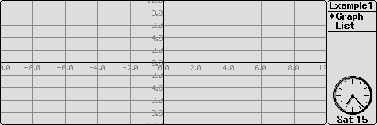
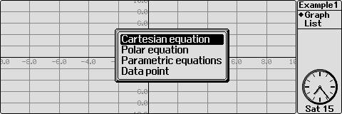
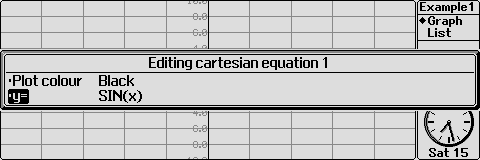
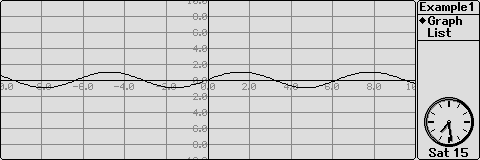
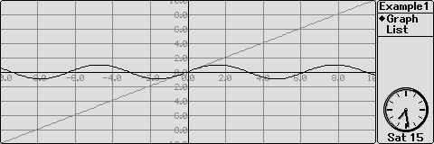
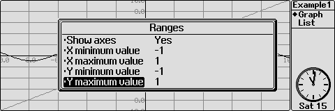
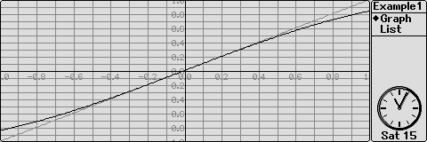
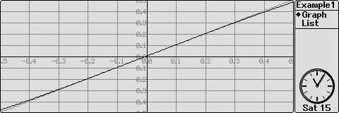

Demonstate that, for values of x approaching 0, sin(x) is approximately equal to x
This is solved analytically by expanding sin(x) into a Taylor's series and then taking the first term, which is x. In Osiris we can plot both y=x and y=sin(x) at the same time. If we zoom in to the graph around the origin, the lines should overlap if the statement is true.
Create a new file in the System screen by moving to the Osiris icon and pressing PSION-N or by pressing menu and selecting the "New file" option from the "File" menu. Complete the dialog box with an appropriate file-name. Osiris is then automatically opened with the new file.
You are greeted with a banner which shows how many plugins and utilities are currently available:

The screen normally shows axes in black with a grid and labels in grey, though you can change this. On the right, a status window shows the time, your current file and which mode you're in: "Graph" or "List". As with other applications, you can cycle between the large status window, a smaller one and no status window at all by pressing Control-Menu. (Siena users can toggle their status window on and off with Fn-Menu. The status window is off by default on this machine).
We need to plot both y=sin(x) and y=x.



A graph of y=sin(x) is now shown on the axes.

We must now adjust the axes to show only small values of x.

| Show axes | Yes |
| X minimum value | -1 |
| X maximum value | 1 |
| Y minimum value | -1 |
| Y maximum value | 1 |
| Grid | Manual |
| Grid colour | Grey |
| X interval | 0.1 |
| Y interval | 0.1 |

The two lines seem to overlap in the middle: We can use the zoom function to look more closely at this region. The zoom facility acts about whichever point is in the centre of the screen and scales the values on either side by a customisable factor. This is normally set at 2 for both axes.

Between -0.5 < x < 0.5, the lines almost completely overlap. Hence, within these limits (and especially around x=0) we see that sin(x) is indeed almost equal to x.
It's a good idea to save your work before experimenting further.
Now that you've completed this tutorial, you should understand how to plot a graph which is of the form y=f(x). You should be able to set the minimum and maximum values of the axes and adjust the spacing of the grid. Finally, you should be able to use the zoom facility.
Osiris is best learnt by experimenting yourself. Suggestions for things you might like to try after completing the tutorial are provided below, so do please have a go.